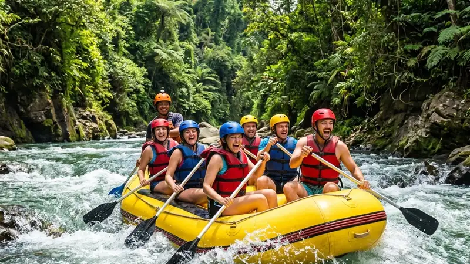

Manfaat olahraga arung jeram mencakup peningkatan kebugaran fisik, pengurangan stres, dan penguatan kerja sama tim. Aktivitas ini menggabungkan latihan otot, pelepasan emosi, dan interaksi sosial dalam satu pengalaman di sungai.
- Melatih hampir seluruh kelompok otot tubuh, terutama lengan, bahu, dan inti tubuh
- Membantu meredakan stres lewat aktivitas luar ruang dan interaksi dengan alam
- Melatih fokus, pengambilan keputusan cepat, dan kepercayaan diri
- Memperkuat kerja sama tim karena peserta harus mendayung secara terkoordinasi
- Cocok untuk pemula maupun yang sudah berpengalaman, selama mengikuti prosedur keselamatan
Arung jeram sering dianggap sekadar aktivitas rekreasi, padahal olahraga ini menawarkan manfaat yang menyentuh banyak aspek kehidupan, mulai dari kebugaran tubuh hingga kualitas hubungan sosial. Artikel ini membahas manfaat tersebut secara menyeluruh sekaligus memberikan gambaran praktis bagi siapa pun yang ingin mencobanya.
Apa Itu Olahraga Arung Jeram?
Arung jeram adalah aktivitas menyusuri sungai berarus deras menggunakan perahu karet yang dikendalikan bersama oleh sekelompok peserta dengan dayung.
Olahraga ini biasanya dilakukan di sungai dengan tingkat kesulitan tertentu, mulai dari jeram yang tenang untuk pemula hingga jeram yang menantang bagi peserta berpengalaman. Setiap perahu umumnya dipandu oleh seorang instruktur atau skipper yang mengarahkan peserta agar dapat melewati rintangan sungai dengan aman. Aktivitas ini dapat dilakukan secara individu dalam kelompok baru, bersama keluarga, atau bersama komunitas dan rekan kerja sebagai kegiatan membangun kebersamaan.
Apa Saja Manfaat Fisik Olahraga Arung Jeram?
Manfaat fisik utama arung jeram adalah melatih kekuatan otot lengan, bahu, dan inti tubuh sekaligus meningkatkan daya tahan kardiovaskular selama mendayung.
Gerakan mendayung yang berulang selama menyusuri sungai memberikan latihan fisik yang menyerupai kombinasi latihan kekuatan dan kardio. Beberapa manfaat fisik yang umum dirasakan meliputi:
- Penguatan otot lengan, bahu, punggung, dan perut karena gerakan mendayung yang konsisten
- Peningkatan daya tahan jantung dan paru-paru akibat aktivitas fisik intens dalam durasi tertentu
- Pembakaran kalori yang cukup signifikan dibandingkan aktivitas santai lainnya
- Peningkatan keseimbangan tubuh saat menjaga posisi di dalam perahu yang bergoyang
- Peningkatan koordinasi antara gerakan tangan, mata, dan respons tubuh terhadap arus air
Intensitas latihan fisik ini dapat bervariasi tergantung tingkat kesulitan sungai dan durasi pengarungan yang dipilih.
Bagaimana Arung Jeram Memengaruhi Kesehatan Mental?
Arung jeram dapat membantu meredakan stres dan meningkatkan suasana hati karena kombinasi aktivitas fisik, paparan alam terbuka, dan rasa pencapaian setelah melewati jeram.
Berada di alam terbuka dan jauh dari rutinitas sehari-hari umumnya memberikan efek menenangkan bagi pikiran. Ditambah dengan aktivitas fisik yang memicu pelepasan hormon endorfin, pengalaman arung jeram dapat memberikan efek positif terhadap suasana hati. Beberapa manfaat mental yang sering dilaporkan peserta antara lain:
- Berkurangnya rasa cemas dan tegang setelah beraktivitas di alam terbuka
- Meningkatnya rasa percaya diri setelah berhasil melewati tantangan jeram
- Terlatihnya kemampuan fokus dan pengambilan keputusan cepat saat menghadapi arus
- Munculnya perasaan segar dan puas karena keluar dari rutinitas harian
Pengalaman menantang secara terkendali seperti ini juga dapat melatih ketahanan mental seseorang dalam menghadapi situasi tak terduga di luar konteks olahraga.
Apa Manfaat Sosial dari Olahraga Arung Jeram?
Manfaat sosial arung jeram terletak pada kebutuhan kerja sama tim, karena peserta harus mendayung secara terkoordinasi agar perahu dapat melewati jeram dengan selamat.
Arung jeram pada dasarnya adalah olahraga kelompok. Setiap peserta memiliki peran dalam menjaga keseimbangan dan arah perahu, sehingga komunikasi dan kekompakan menjadi kunci keberhasilan. Manfaat sosial yang dapat diperoleh meliputi:
- Terbangunnya rasa saling percaya antaranggota tim
- Terlatihnya kemampuan komunikasi cepat dan jelas dalam situasi yang dinamis
- Terciptanya momen kebersamaan yang mempererat hubungan, baik dengan keluarga, teman, maupun rekan kerja
- Munculnya pengalaman kolektif yang sering menjadi bahan cerita dan kenangan bersama
Karena alasan inilah arung jeram cukup populer sebagai kegiatan outbound atau team building bagi berbagai kelompok, mulai dari keluarga hingga komunitas otomotif.
Apa Saja Faktor yang Memengaruhi Manfaat Arung Jeram?
Manfaat arung jeram yang dirasakan setiap peserta dapat berbeda tergantung tingkat kesulitan sungai, durasi pengarungan, dan kondisi fisik masing-masing individu.
Beberapa faktor yang memengaruhi seberapa besar manfaat yang dirasakan antara lain:
- Tingkat kesulitan jeram (grade), yang menentukan intensitas fisik dan tantangan mental
- Durasi pengarungan, karena rute yang lebih panjang umumnya memberikan latihan fisik lebih banyak
- Kondisi kesehatan dan kebugaran peserta sebelum mengikuti aktivitas
- Kualitas pemandu dan prosedur keselamatan yang diterapkan operator
Memilih paket dan operator yang sesuai dengan kemampuan fisik menjadi langkah penting agar manfaat arung jeram dapat dirasakan secara optimal dan aman.
Apa Saja Kesalahan Umum saat Mencoba Arung Jeram?
Kesalahan umum saat mencoba arung jeram meliputi mengabaikan instruksi keselamatan, tidak menggunakan perlengkapan standar, dan memilih rute yang tidak sesuai kemampuan.
Beberapa kesalahan yang sebaiknya dihindari:
- Tidak menyimak briefing keselamatan sebelum memulai pengarungan
- Melepas atau tidak mengenakan pelampung dan helm dengan benar
- Memaksakan diri mencoba rute dengan tingkat kesulitan tinggi tanpa pengalaman
- Mengabaikan kondisi fisik sendiri, misalnya saat kelelahan atau kurang sehat
- Tidak mengikuti arahan pemandu saat menghadapi jeram
Menghindari kesalahan-kesalahan ini penting agar pengalaman arung jeram tetap memberikan manfaat tanpa risiko cedera yang tidak perlu.
Tips agar Manfaat Arung Jeram Bisa Dirasakan Maksimal
Untuk merasakan manfaat arung jeram secara maksimal, peserta disarankan memilih rute sesuai kemampuan, menjaga kondisi fisik, dan mengikuti seluruh arahan keselamatan dari pemandu.
Beberapa tips praktis yang dapat diterapkan:
- Pilih tingkat kesulitan sungai yang sesuai dengan pengalaman, terutama bagi pemula
- Pastikan kondisi fisik cukup fit sebelum mengikuti aktivitas
- Kenakan perlengkapan keselamatan standar seperti pelampung dan helm dengan benar
- Dengarkan dan ikuti instruksi pemandu selama pengarungan
- Jaga kekompakan dengan anggota tim lain di dalam perahu
Dengan persiapan yang tepat, manfaat fisik, mental, dan sosial dari arung jeram dapat dirasakan secara lebih optimal.
FAQ
Apakah arung jeram termasuk olahraga yang berat?
Tingkat intensitas arung jeram bervariasi tergantung grade jeram dan durasi pengarungan, sehingga dapat disesuaikan dengan kemampuan fisik peserta.
Apakah arung jeram aman untuk pemula?
Arung jeram umumnya aman untuk pemula selama memilih rute dengan tingkat kesulitan rendah dan mengikuti prosedur keselamatan operator.
Berapa lama manfaat fisik arung jeram bisa dirasakan?
Manfaat fisik seperti otot yang lebih terlatih dapat dirasakan bertahap apabila arung jeram dilakukan secara rutin, meskipun sesi tunggal tetap memberikan manfaat kebugaran jangka pendek.
Arya
penulis artikel yang sudah berpengalaman di dalam dunia wisata outbound Batu Malang.